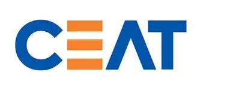
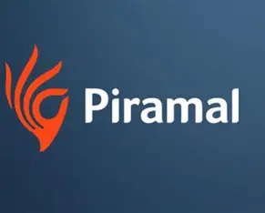
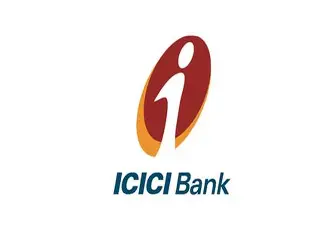

Academic Notice
The deadline for re-admissions to Semesters 3, 5, 7, and 9 has been extended. Students are advised to complete the re-admission process by the revised last date of 14 September 2025.
📢 Important Academic Update
Students must ensure daily attendance and active participation.
Admissions Open
Unlock your future in tech—Enroll now for BCA, MCA, PGDCA, B.Tech, MSc CS & MSc IT and more! 🚀
⚠️ Student Alert
All students must complete admission and re-admission documentation without delay. Failure to do so will result in disqualification from both mid-term and main examinations.
News & Events ✨
Stay updated with the latest announcements, upcoming events, and important academic alerts to ensure you never miss an opportunity.
×

×

Placements & Career Success 💼
Our strong industry connections and dedicated career services ensure students transition from campus to career seamlessly.
--
Placement Rate
--
Average Salary
--
Highest Salary
Top Recruiters





Courses Offered
Bachelor of Computer Applications (BCA)
The Bachelor of Computer Applications (BCA) is a 3-year undergraduate program designed to provide a strong academic foundation in computer science, software development, and IT applications. The course emphasizes both theoretical knowledge and practical exposure to prepare students for diverse roles in the technology-driven world.
Program Objectives
- To develop a solid foundation in core areas of computer science including programming, data structures, operating systems, databases, and networking.
- To nurture problem-solving, analytical, and logical reasoning skills for real-world IT applications.
- To foster adaptability to emerging technologies such as Artificial Intelligence, Cloud Computing, Blockchain, and Data Analytics.
- To encourage innovation, teamwork, and professional ethics for success in the global IT industry.
Program Outcomes
- Graduates will demonstrate proficiency in software development, web technologies, database management, and system design.
- Ability to analyze, design, and implement computing solutions for industry and societal needs.
- Preparedness for diverse career opportunities such as Software Engineer, Web Developer, System Analyst, IT Consultant, Cybersecurity Analyst, and Data Analyst.
- Readiness to pursue higher education including MCA, MBA (IT), or specialized certifications in advanced technologies.
Salient Features
- Comprehensive curriculum blending theory with hands-on laboratory sessions.
- Emphasis on project-based learning, coding practices, and industry-relevant skills.
- Exposure to the latest programming languages, frameworks, and development tools.
- Regular workshops, seminars, and guest lectures by industry experts.
- Strong placement assistance and career guidance for students entering the IT workforce.
Master of Computer Applications (MCA)
The Master of Computer Applications (MCA) is a 2-year postgraduate program designed to provide students with advanced theoretical knowledge and practical expertise in computer science and its applications. The program equips learners with specialized skills in software engineering, system design, application development, and modern technologies to meet the evolving needs of the IT industry.
Program Objectives
- To impart advanced knowledge of computer applications, software development methodologies, and system architecture.
- To enhance analytical, research, and problem-solving skills to tackle complex IT challenges.
- To foster innovation and adaptability in emerging areas such as Artificial Intelligence, Cloud Computing, Data Science, and Cybersecurity.
- To develop leadership qualities, teamwork, and professional ethics for career advancement and industry success.
Program Outcomes
- Graduates will demonstrate expertise in advanced programming, software development, and IT management.
- Ability to design, analyze, and implement enterprise-level solutions to address real-world technological challenges.
- Preparedness for senior-level positions such as Senior Software Developer, Data Scientist, Cloud Architect, Systems Analyst, IT Manager, and Cybersecurity Specialist.
- Eligibility to pursue higher academic and research opportunities such as a Ph.D. in Computer Science or related fields.
- Capability to contribute to entrepreneurship, startups, and technological innovations.
Salient Features
- Comprehensive curriculum aligned with industry standards and research advancements.
- Emphasis on project work, case studies, and dissertation to foster practical problem-solving skills.
- Exposure to cutting-edge technologies, development frameworks, and enterprise tools.
- Interactive learning through seminars, workshops, and expert talks from industry leaders.
- Strong placement support with opportunities in top IT companies and multinational corporations.
BCA+MCA Integrated Program
The BCA+MCA Integrated Program is a 5-year dual-degree course tailored for students who wish to build a strong foundation in computer applications and advance into specialized areas of software development and IT management. This seamless academic pathway integrates undergraduate and postgraduate studies, saving valuable time and eliminating the need for separate entrance processes.
Program Objectives
- To provide a comprehensive curriculum that bridges undergraduate fundamentals with postgraduate expertise in computer applications.
- To enable students to develop strong analytical, problem-solving, and programming skills for advanced IT solutions.
- To equip learners with knowledge in cutting-edge domains such as Data Science, Cloud Computing, Artificial Intelligence, and Cybersecurity.
- To foster long-term academic and professional growth by offering a continuous and structured learning path.
Program Outcomes
- Graduates will possess both foundational and advanced knowledge in computing, system design, and application development.
- Ability to seamlessly transition from undergraduate learning to postgraduate-level expertise without academic gaps.
- Preparedness for diverse career roles including Software Developer, Full Stack Engineer, Data Analyst, Cloud Architect, IT Consultant, and Project Manager.
- Enhanced eligibility for higher studies, research, and innovation, including opportunities to pursue a Ph.D. in Computer Science.
- Competence in handling leadership roles and contributing to strategic decision-making in the IT sector.
Salient Features
- Integrated 5-year dual-degree structure ensuring academic continuity and career readiness.
- Balanced focus on core computer science fundamentals and advanced application-oriented subjects.
- Practical learning through industry projects, internships, workshops, and coding competitions.
- Exposure to the latest tools, frameworks, and research in computer applications.
- Strong placement opportunities with a competitive edge due to dual qualifications.
Post Graduate Diploma in Computer Applications (PGDCA)
The Post Graduate Diploma in Computer Applications (PGDCA) is a 1-year intensive program designed for graduates from any discipline who wish to gain a strong foundation in computer applications and information technology. The course focuses on practical knowledge and technical skills essential for building a career in the IT industry, making it an ideal option for career transition and skill enhancement.
Program Objectives
- To provide fundamental knowledge of computer applications, software development, and IT systems to graduates from diverse backgrounds.
- To develop practical skills in programming, database management, web development, and office automation tools.
- To prepare students for immediate entry into the IT workforce with industry-relevant competencies.
- To act as a bridging course for higher studies in computer applications, especially the MCA program.
Program Outcomes
- Graduates will demonstrate competency in using computer applications, programming languages, and IT tools for professional tasks.
- Ability to apply theoretical concepts to practical solutions in areas such as software development, web technologies, and database systems.
- Preparedness for entry-level IT roles such as Junior Programmer, Web Developer, Database Administrator, IT Consultant, and System Analyst.
- Eligibility and preparedness to pursue advanced education such as the MCA or other specialized certifications in IT.
Salient Features
- One-year intensive program designed for rapid skill acquisition and career readiness.
- Comprehensive curriculum covering IT fundamentals, software practices, and digital tools.
- Hands-on training through projects, practical sessions, and workshops.
- Suitable for graduates from non-technical backgrounds aspiring to enter the IT domain.
- Provides a strong academic and professional base for higher studies in computer applications.
Bachelor of Technology in Computer Science (B.Tech CSE)
The Bachelor of Technology in Computer Science and Engineering (B.Tech CSE) is a 4-year undergraduate program that offers rigorous training in computer science, engineering principles, and their practical applications. The program prepares students to become innovators, researchers, and leaders in the technology-driven world, equipping them with both strong theoretical knowledge and advanced practical skills.
Program Objectives
- To provide students with a solid foundation in core areas of computer science, mathematics, and engineering principles.
- To develop technical expertise in software engineering, system design, networking, data science, and artificial intelligence.
- To foster problem-solving, critical thinking, and research capabilities in modern computing systems.
- To cultivate leadership qualities, teamwork, and professional ethics for success in global IT and engineering domains.
Program Outcomes
- Graduates will acquire advanced knowledge in computing, algorithms, and scalable software development.
- Ability to design, develop, and optimize high-performance applications and engineering solutions.
- Preparedness for diverse career roles such as Software Engineer, Data Scientist, AI/ML Specialist, Cybersecurity Analyst, Cloud Architect, and Research Engineer.
- Eligibility for higher education opportunities including M.Tech, MBA (Tech), or Ph.D. in Computer Science and related fields.
- Capability to contribute to entrepreneurship, innovation, and sustainable technological growth in society.
Salient Features
- Prestigious 4-year engineering program combining computer science fundamentals with practical engineering applications.
- Industry-aligned curriculum with a focus on AI, Machine Learning, Data Science, Cloud Computing, and Cybersecurity.
- Hands-on learning through laboratories, research projects, hackathons, and internships.
- Opportunities to engage in innovation, patents, and entrepreneurship initiatives.
- Strong placement record with career opportunities in top IT firms, research labs, and multinational corporations.
Master of Science in Computer Science (M.Sc CS)
The Master of Science in Computer Science (M.Sc CS) is a 2-year postgraduate program designed for students who wish to gain deep theoretical and research-oriented knowledge in computer science. The program emphasizes computational theory, advanced algorithms, and system design, preparing students for careers that demand innovation, critical inquiry, and advanced technical expertise.
Program Objectives
- To provide advanced knowledge of computational theory, algorithms, and modern system design.
- To cultivate research skills and analytical thinking for exploring complex computing problems.
- To prepare students for careers in data science, artificial intelligence, and high-level research roles.
- To foster innovation, scientific inquiry, and academic excellence for contributions to computer science research and development.
Program Outcomes
- Graduates will demonstrate expertise in algorithmic design, computational models, and emerging technologies.
- Ability to conduct independent research, publish scientific findings, and contribute to the advancement of computer science.
- Preparedness for career roles such as Data Scientist, AI/ML Engineer, Algorithm Specialist, Research Scientist, and Software Architect.
- Eligibility to pursue a Ph.D. in Computer Science and contribute to academia, innovation, and research institutions.
- Capacity to apply advanced computing principles to solve real-world scientific and industrial challenges.
Salient Features
- Specialized 2-year postgraduate program with a strong research focus.
- Balanced curriculum integrating theoretical foundations with advanced applications.
- Opportunities for dissertation, publications, and participation in conferences and workshops.
- Exposure to cutting-edge fields such as Artificial Intelligence, Data Science, Machine Learning, and High-Performance Computing.
- Pathway to academic careers, research institutions, and industry-based R&D roles.
Master of Science in Information Technology (M.Sc IT)
The Master of Science in Information Technology (M.Sc IT) is a specialized postgraduate program designed to equip students with advanced skills in managing, securing, and leveraging modern information systems. Unlike traditional computer science degrees, this program emphasizes the practical application of technology in organizational and business contexts, preparing graduates for leadership roles in the dynamic IT industry.
Program Objectives
- To develop expertise in information systems management, IT infrastructure, and enterprise technologies.
- To enhance skills in cybersecurity, cloud computing, data management, and digital transformation strategies.
- To prepare students for leadership and managerial roles in technology-driven organizations.
- To foster the ability to bridge the gap between technical IT operations and organizational business goals.
Program Outcomes
- Graduates will demonstrate proficiency in managing IT systems, networks, and enterprise solutions.
- Ability to analyze, design, and implement secure and efficient information systems for business and industry needs.
- Preparedness for career opportunities such as IT Manager, Cybersecurity Analyst, Cloud Solutions Architect, Database Administrator, and Technology Consultant.
- Readiness for executive-level responsibilities, entrepreneurship, or advanced research in information technology.
- Capability to contribute to organizational growth by aligning IT strategies with business objectives.
Salient Features
- Specialized postgraduate program with a focus on practical IT applications in organizations.
- Industry-oriented curriculum covering cybersecurity, cloud solutions, database systems, and IT governance.
- Case studies, workshops, and projects to strengthen managerial and technical decision-making.
- Exposure to modern enterprise tools and emerging technologies shaping the IT landscape.
- Career pathways into leadership, consultancy, and executive roles in technology-driven businesses.
Post Graduate Diploma (PG Diploma)
The Post Graduate Diploma (PG Diploma) is a versatile postgraduate program designed for graduates from any discipline who wish to gain specialized knowledge and practical skills in a focused area. It is ideal for professionals looking to enhance their qualifications, switch career paths, or prepare for advanced studies without committing to a full master’s degree.
Program Objectives
- To provide specialized, industry-relevant training in a specific domain.
- To help graduates transition into new career paths with practical expertise.
- To serve as a bridge toward advanced academic pursuits such as master’s degrees.
Program Outcomes
- Graduates will gain practical knowledge aligned with industry requirements.
- Employment opportunities in roles such as Project Coordinator, Technical Specialist, or Analyst.
- Eligibility for academic progression, with many universities offering credit transfers into master’s programs.
Salient Features
- Short-term, career-focused postgraduate program.
- Industry-oriented curriculum with practical exposure.
- Flexible entry route for non-technical graduates into technical fields.
- Foundation for higher studies, professional growth, and lifelong learning.
Diploma in Computer Science & Engineering
The Diploma in Computer Science & Engineering provides students with the fundamentals of computer hardware, software, and programming. The program emphasizes practical skills in networking, databases, and web development through hands-on labs and projects.
Program Objectives
- To introduce students to core computing concepts and programming techniques.
- To provide hands-on skills in web technologies, networking, and databases.
- To prepare students for entry-level roles in the IT sector or for further studies.
Program Outcomes
- Graduates can take up roles such as Junior Software Developer, IT Support Specialist, Web Designer, or Network Administrator.
- Readiness for lateral entry into the 2nd year of a B.Tech program in Computer Science.
- Ability to design, develop, and troubleshoot software and network-based solutions.
Salient Features
- Practical and lab-focused curriculum.
- Strong foundation in software and IT fundamentals.
- Career-oriented program with industry relevance.
- Direct pathway to higher education (B.Tech lateral entry).
Diploma in Electrical Engineering
The Diploma in Electrical Engineering covers core concepts of electricity, electronics, and electromagnetism. Students gain hands-on knowledge in power systems, electrical machines, and control systems, preparing them for technical roles across industries.
Program Objectives
- To build a solid foundation in electrical engineering concepts and systems.
- To train students in practical applications such as circuits, machines, and power systems.
- To prepare students for immediate employment or further studies in electrical engineering.
Program Outcomes
- Employment opportunities as Electrical Technician, Maintenance Supervisor, Field Engineer, or Power Plant Operator.
- Ability to apply knowledge to real-world electrical projects and systems.
- Eligibility for lateral entry into B.Tech in Electrical Engineering.
Salient Features
- Balanced theoretical and hands-on training.
- Curriculum aligned with industrial needs in power and electrical sectors.
- Opportunities for direct employment or advanced studies.
Diploma in Electronics & Communication Engineering
The Diploma in Electronics & Communication Engineering (ECE) equips students with knowledge in electronic circuits, communication systems, and embedded technologies. The program emphasizes mobile communication, digital systems, and telecommunications with practical lab training.
Program Objectives
- To develop expertise in electronic devices, circuits, and communication systems.
- To train students in modern telecommunication and digital technologies.
- To prepare graduates for roles in electronics, communication, and IT industries.
Program Outcomes
- Career opportunities as Electronics Technician, Junior Design Engineer, Field Service Engineer, or Broadcast Engineer.
- Ability to troubleshoot and maintain electronic and communication systems.
- Pathway for lateral entry into B.Tech in Electronics & Communication Engineering.
Salient Features
- Industry-relevant curriculum in electronics and communication.
- Hands-on laboratory training in circuits, systems, and embedded devices.
- High employability in telecommunications and electronics industries.
Diploma in Mechanical Engineering
The Diploma in Mechanical Engineering focuses on mechanics, thermodynamics, and materials science. Students gain practical skills in designing, analyzing, and manufacturing mechanical systems through workshops and real-world projects.
Program Objectives
- To provide students with a strong understanding of mechanical principles and systems.
- To train students in design, analysis, and maintenance of mechanical structures.
- To prepare graduates for immediate employment or higher education in engineering.
Program Outcomes
- Graduates can pursue careers as Mechanical Technician, Production Supervisor, Quality Control Inspector, or CAD Designer.
- Ability to use mechanical tools, machines, and software effectively.
- Eligibility for lateral entry into the 2nd year of a B.Tech in Mechanical Engineering.
Salient Features
- Workshop and project-based learning approach.
- Strong career prospects in manufacturing, automotive, and energy industries.
- Clear academic pathway toward advanced mechanical studies.
Diploma in Civil Engineering
The Diploma in Civil Engineering focuses on planning, design, and construction of infrastructure such as roads, bridges, and buildings. Students gain hands-on knowledge in surveying, construction management, and structural design with industry-relevant training.
Program Objectives
- To provide fundamental knowledge in civil engineering concepts and practices.
- To equip students with practical skills in construction, surveying, and structural analysis.
- To prepare students for immediate employment or advanced studies in civil engineering.
Program Outcomes
- Employment opportunities as Civil Engineering Technician, Site Supervisor, Draftsman, or Surveyor.
- Ability to contribute to construction and infrastructure projects effectively.
- Eligibility for lateral entry into B.Tech in Civil Engineering.
Salient Features
- Practical training through site visits and lab sessions.
- Curriculum aligned with real-world infrastructure development needs.
- Direct entry route for higher education and career advancement.
Celebrating Success of Students
Our Distinguished Faculty
Research & Innovation
Artificial Intelligence
Pioneering new algorithms in machine learning, neural networks, and natural language processing.
Cybersecurity
Developing robust solutions for digital security, cryptography, and network forensics.
Data Science
Exploring advanced analytics, big data visualization, and predictive modeling.
Software Engineering
Focusing on scalable and reliable software design, development, and maintenance.
Check Your Eligibility
Find out instantly if you qualify for your chosen course.
Our Facilities
Our state-of-the-art facilities provide the perfect environment for learning, research, and collaboration.
The Faculty of Computer Science and Engineering at Shri Khushal Das University is dedicated to advancing knowledge, innovation, and research. Our department combines academic rigor with practical exposure, ensuring students are prepared to meet the challenges of a rapidly evolving technological landscape.
Through state-of-the-art digital classrooms, modern laboratories, and interdisciplinary projects, students gain both theoretical insights and hands-on experience. The faculty’s commitment to mentoring enables learners to grow as critical thinkers, innovators, and problem-solvers.
“We aspire to create future leaders in technology — professionals driven by knowledge, guided by innovation, and committed to excellence.”
Over the years, our students have excelled in academics, contributed to impactful projects, and strengthened the university’s reputation as a hub of excellence. As a department, we remain committed to nurturing talent and fostering a culture where learning translates into real-world achievements.